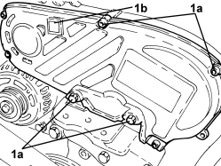
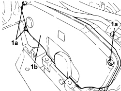

1032D12 TIMING SYSTEM PROTECTIVE COVER(S) - R + R
- Path
- Procedures > 10 ENGINE > 1032 TIMING SYSTEM > 1032D TIMING SYSTEM PROTECTIONS > 1032D12 TIMING SYSTEM PROTECTIVE COVER(S) - R + R
- Kind
- repair procedure (removal / refitting; the operation number is the code)
- Applies to
- engines: 1.9 JTD 8v, 1.9 JTD 16v, 2.4 JTD 20v; all production periods
- Interactive page
- https://sloeber94.github.io/elrnDB-fCrm/en/#/194002152
Applies to: engines: 1.9 JTD 8v, 1.9 JTD 16v; all production periods
 Removing
Removing
 Refitting
Refitting- Make sure that the ignition key is in the OFF position, then disconnect the battery terminal (-).
Description | Connector | |
|---|---|---|
- | Battery |
Op. 1048A10 AIR FILTER ASSEMBLY - R.R.
1. Undo the bolts (1a) and remove the protective timing cover (1b).

Applies to: engines: 1.9 JTD 8v, 1.9 JTD 16v; all production periods
Refitting
Removing- Fit the timing belt covers and secure them using the bolts.
Op. 1048A10 AIR FILTER ASSEMBLY - R.R.
- Connect the negative battery terminal.
Applies to: engines: 2.4 JTD 20v; all production periods
Removing
Refitting- Make sure that the ignition key is in the OFF position, then disconnect the battery terminal (-).
Op. 1016A10 SOUND-PROOFING COVER - R.R
Op. 1048A10 AIR FILTER ASSEMBLY - R.R.
Op. 1008B10 POWER UNIT FRONT SUPPORT FLEXIBLE MOUNTING (TIMING SIDE) - REPLACE
1. Undo the bolts (1a) and remove the protective timing cover (1b).

Applies to: engines: 2.4 JTD 20v; all production periods
Refitting
Removing1. Place the protective timing cover back in its housing and secure it using the bolts.
Op. 1008B10 POWER UNIT FRONT SUPPORT FLEXIBLE MOUNTING (TIMING SIDE) - REPLACE
Op. 1048A10 AIR FILTER ASSEMBLY - R.R.
Op. 1016A10 SOUND-PROOFING COVER - R.R
- Connect the negative battery terminal.
Topics linked from this page (4)
- 1008B10 POWER UNIT FRONT SUPPORT FLEXIBLE MOUNTING (TIMING SIDE) - REPLACE
- 1016A10 SOUND-PROOFING COVER - R.R
- 1048A10 AIR FILTER ASSEMBLY - R.R.
- A001 BATTERY